«Алкогольная революция»: хлебное вино в опале

«Казенная продажа питей» 1895–1914 гг.
Акциз, несмотря на все очевидные успехи в производстве «высших питей», начиная с восьмидесятых годов стал вызывать в некоторых кругах российского общества все большее и большее раздражение. По-видимому, основная причина этого кроется в завышенных изначально ожиданиях от результатов действия новой системы. Акциз, пришедший на смену откупам, был для России чем-то абсолютно неизведанным и, как всегда в подобных случаях, казалось, что новое лекарство станет панацеей от всех болезней. Поэтому ожидалось, что с введением новой системы будут решены основные проблемы: «народное пьянство» и «наполнение казны».
Пьянство — проблема для России из разряда «вечных». Наш сегодняшний исторический опыт вполне доказывает, что никакие фискальные и административные меры, вплоть до «сухого закона», не в состоянии с этой проблемой справиться. Так что наивно было ожидать, что искоренить пьянство или, по крайней мере, сколь-нибудь значительно уменьшить его удастся с помощью той или иной системы налогообложения. Тем более что русское пьянство — проблема, связанная не столько с общим количеством спиртного на душу населения (как раз по этому показателю Россия девятнадцатого века была в числе самых «малопьющих»),[239] сколько с характером потребления — «разгульным», «кабацким», «запойным».
Вот что пишет современный исследователь:
«В правительстве долго бытовало мнение, что распространение пьянства прямо пропорционально росту потребления спиртных напитков. Между тем как раз в этом отношении Россия принадлежала к самым „трезвым“ странам Европы. В 1885–1889 гг. потребление алкоголя на душу населения в среднем составляло 2,7 л, т. е. несравненно меньше, чем во Франции (15,7 л), Италии (12,3 л), Англии (9,9 л), Германии (8,5 л), Австро-Венгрии (8,4 л). Однако культура „питья“ в этих странах была гораздо выше» [240]
Во всяком случае русские экономисты в начале двадцатого века единодушно сошлись на том, что
«колебания в потреблении, при существовании акциза, зависели не от способа обложения и даже, быть может, не от высоты ставки налога, — по крайней мере, определяющими являлись не эти причины, а более глубокие условия народного хозяйства и народной жизни» [241]
Но так или иначе ожидания, что акциз решит проблему «народного пьянства», были, и они не оправдались. Стали звучать утверждения, что акцизная система способствует «спаиванию народа». Забегая вперед, отметим, что позднее такие же обвинения выдвигались в адрес монополии.
Несколько иначе обстояло дело с «наполнением казны». Казна при акцизе наполнялась весьма активно:[242]
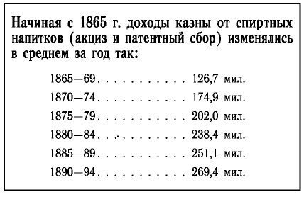
И далее там же:
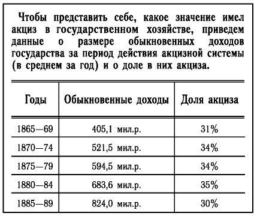
Но хотя казна активно наполнялась, вместе с тем росли капиталы частных заводчиков и торговцев. Естественно, очень многим казалось, что при восстановлении государственной монополии эти деньги также оставались бы в казне.
«С финансовой точки зрения введение монополии могло быть соблазнительным только как средство извлечь добавочный доход, не затрагивая карманов потребителей, путем присвоения прибылей частных торговцев водкой» [243]
И, наконец, был еще один аргумент у противников акцизной системы — быстрое снижение числа мелких сельскохозяйственных винокурен. Термином «сельскохозяйственное винокурение» обозначалось производство вина на мелких помещичьих винокурнях. В условиях аграрной России они всегда играли очень большую роль. Причем, как это ни выглядит парадоксальным, иногда главной целью строительства винокурни для помещика было не производство вина, а производство корма для скота. Дело в том, что барда, остающаяся после перегонки, представляла собой прекрасный корм для скота, богатый белками и витаминами. В зимнее время малопитательная солома, смешанная с бардой, великолепно заменяла летний подножный корм. Создавался некий замкнутый кругооборот. Выращенная в поместье рожь частично перерабатывалась в барду, та шла на корм скоту, который своими отходами жизнедеятельности удобрял почву для урожая ржи. Политика государства, проводимая в акцизный период, привела к тому, что мелкие сельскохозяйственные винокурни не выдерживали конкуренции с крупными промышленными производствами. Дело в том, что при акцизе определенные преимущества получили крупные винокуренные заводы промышленного типа. Мелкие же, неразрывно связанные с сельскохозяйственными угодьями, перерабатывающие урожай, собранный в этих угодьях, и использующие отходы винокуренного производства — так называемую барду на корм скоту, повсеместно приходили в упадок. В качестве примера приведем Ярославскую губернию, где количество сельскохозяйственных винокурен за акцизный период сократилось с 16 до 3.[244]
Вот как характеризуется положение дел в целом по России в докладе Комиссии по исследованию сельского хозяйства (комиссия гр. Валуева):
«Существующие в настоящее время акцизные правила совершенно убили мелкое винокурение, как статью сельскохозяйственного производства, и обратили его в чисто заводское предприятие» [245]
Правда, впоследствии аналитики пришли к выводу, что
«…причина той эволюции, которая наблюдалась до 1890 г., заключается не в существе акцизной системы, а в сопутствующих ее применению явлениях и мерах. …Строй и характер винокурения зависит не от акцизной системы, а от общих условий хозяйственной эволюции, с одной стороны, и от направления экономической политики — с другой» [246]
Но на словах правительство всегда декларировало заботу о помещичьем сословии вообще и о сельскохозяйственном винокурении в частности. Поэтому любая реформа сопровождалась реверансами в сторону сельскохозяйственного винокурения. Но, к сожалению, реверансами все дело и кончалось, по крайней мере со второй половины XIX века. Забегая вперед, отметим, что монополия эту важнейшую для России отрасль похоронила окончательно.
Так или иначе, но произошло то, что произошло. Идея монополии победила. Все «возвратилось на круги своя». Вот как это виделось в 1914 г.:
«…В последнее десятилетие XIX века вновь возвратились к той форме обложения спиртных напитков, которая существовала в России с незапамятных времен, с тех самых пор, как вообще появилось обложение водки. Ведь период акциза был только кратковременным эпизодом, длившимся всего 30 лет, а до того, по меньшей мере, два с половиной столетия, а может быть, и три века с лишним господствовала монополия казенной продажи, соединявшаяся порою с монополией выкурки. …Это простое и бесспорное обстоятельство надо помнить твердо при изучении причин введения винной монополии в новейшее время. Дело шло не о чем-то новом, неизведанном или заимствованном, а о возврате „домой“, к исторической форме. И отнюдь не случайно годы новаторства, подражания Западу в области питейного дела совпали с эпохой политического и экономического либерализма, а возврат от чужой формы обложения к той, что была прежде, произошел в период раскаяния и реставрации, в эпоху идеализации прошлого. Среди реформ шестидесятых годов видное место занимал акциз, среди мер восстановления „исторических устоев“ горячо и с успехом пропагандировалась казенная продажа питей» [247]
Не правда ли, звучит очень современно? Однако сколь бы ни интересна была история возникновения и развития «казенной продажи питей» на рубеже XIX–XX вв., а также сопутствующих ей общественно-политических баталий, для нас главное — проследить, каким образом введение монополии отразилось на «хлебном вине», о котором, собственно, мы и ведем речь.
Перед монополией стояли (или, по крайней мере, официально декларировались) три задачи:
— увеличение доходов казны;
— «отрезвление» народа;
— возрождение сельскохозяйственного винокурения.
До сих пор не утихают споры о том, какая из целей была основной: фискальная или, так сказать, «общественно-гигиеническая», так как трудно себе представить задачи, более сложно совместимые. Противоречие здесь очевидное: чтобы больше собирать налогов, нужно, чтобы больше пили, и как же тогда быть с распространением пьянства? Тем не менее «архитекторы» монополии смогли, как казалось, устранить это противоречие. Во-первых, утверждали они, необходимо изменить с помощью организации торговли характер потребления, устранив древнее российское зло — кабак и связанную с ним привычку «запойного пьянства», тогда пить будут «правильно», «культурно», то есть с едой и равномерно.
Во-вторых, монополия обещала выпуск «чистого», свободного от примесей вина, которого можно выпить больше без вредных последствий для организма. Предполагалось, что при соблюдении этих двух условий общее потребление вина вырастет, но при этом оно будет иметь цивилизованный характер.
Еще одно существенное обстоятельство: в отличие от монополий предыдущего времени новая монополия должна была основываться на последних данных науки, а также иметь новейшее техническое оснащение. Разработка питейной монополии началась в 1887 году. Тогда же при Департаменте неокладных сборов был создан Технический комитет, в задачу которого входило решение всех научно-технических вопросов. Комитет просуществовал вплоть до 1914 года, оставив после себя 27 томов «Трудов Технического комитета», в которых содержатся поистине неоценимые сведения о состоянии винокурения и винно-водочной промышленности Российской империи.
В 1893 г. министр финансов С. Ю. Витте подал в Государственный совет проект введения винной монополии, в 1894 г. было утверждено Положение о казенной продаже питей, а с 1 января 1895 г. монополия была введена на территории четырех российских губерний — Пермской, Оренбургской, Уфимской и Самарской.
Монополия вводилась поэтапно, причем первоначально предполагалось, что дальнейшее распространение монополии начнется только после того, как будут получены и серьезно проанализированы результаты ее деятельности на «экспериментальных» территориях. Однако благодаря личной энергии министра финансов охват все новых и новых территорий происходил очень быстро.[248]
Производство и продажа «высших питей» были организованы монополией следующим образом. Торговля целиком и полностью переходила в руки государства:
«Продажа спирта, вина и водочных изделий на местное потребление составляет исключительное право казны» [249]
Базовое производство — винокурение — оставалось в частных руках, при этом заводчики должны были продавать спирт исключительно в казну по ценам, назначаемым министерством финансов. Для приемки и переработки спирта, а также оптовой продажи «питей» были построены типовые казенные винные склады. На этих же складах монополия производила свою собственную продукцию: очищенное и столовое вино. Водочные изделия монополия не производила, а закупала их у частных заводчиков. Было установлено законодательно, что вино должно быть изготовлено исключительно из ректификованного спирта и иметь крепость не ниже сорока градусов:
«Вино и спирт обращаются в продажу не иначе, как в очищенном перегонкою виде и крепостью не ниже сорока градусов» [250]
Кроме того,
«крепость вина и его цена обозначаются на этикетках, наклеенных на посуде» [251]
Продукция, производимая монополией — знаменитая «монополька», — заслуживает подробного разговора. Нам предстоит ответить на четыре ключевых вопроса:
— Сколько было видов «монопольного» вина?
— Из какого сырья и по какой технологии оно производилось?
— Почему за «стандарт» при производстве вина был принят ректификованный спирт?
— Какое влияние оказала «монополька» на дальнейшую судьбу алкогольных дистиллятов в России?
Разумеется, монополия собиралась самостоятельно производить все виды «хлебного вина» и его производных. Однако на практике до этого дело не дошло — производство водочных изделий было слишком сложно. У монополии не было ни квалифицированных кадров, ни рецептов. Дай бог бы наладить в достаточном количестве выпуск вина. При всей внешней простоте задачи проблем хватало и здесь. Частные заводчики выпускали очень много видов очищенного и столового вина, поэтому возникал вопрос: а что будет выпускать монополия? Вот какой был найден выход:
«Взамен многочисленных сортов вина, которые приготовлялись частными заводчиками, решено было изготовлять два сорта: обыкновенное вино (взамен „очищенного“, но из ректификованного спирта. — Прим. авт. ) и столовое вино» [252]
Безусловно, это было гениальное решение. Отныне существовало только два вида вина: «Казенное вино» и «Столовое казенное вино». Никаких вольностей.
Узнать, из чего собственно приготовлено вино, теперь было невозможно.
Но на этом сложности не заканчивались. Нужно было разработать типовые технологии приготовления вина, причем на научной основе. В связи с этим нельзя не привести еще одну легенду В. Похлебкина:
«В результате проведенных исследований Д. И. Менделеева с конца XIX века русской (а точнее — московской) водкой стали считать лишь такой продукт, который представлял собой зерновой (хлебный) спирт, перетроенный и разведённый затем по весу водой точно до 40°. Этот менделеевский состав водки и был запатентован в 1894 году правительством России как русская национальная водка — „Московская особая“ (первоначально называлась „Московская особенная“)» [253]
В этом утверждении неправдой является все: при монополии никакого разделения спиртов по сырьевой составляющей не было в принципе; каким именно образом — по весу или по объему — составлялась 40 %-ная водно-спиртовая смесь, не имело значения; а что обозначает термин «перетроенный» применительно к ректификованным спиртам монопольного периода, одному богу известно. И это не говоря уже о том, что напиток, изготовленный по этому рецепту, никак не мог именоваться в ту пору водкой, так как к водочным изделиям относились исключительно напитки, содержащие «примеси, не свойственные спирту, как продукту винокурения», [254] то есть искусственные добавки. Если же этих добавок не было, то напиток именовался вином.
Для того чтобы покончить со спекуляциями по части «разведения по весу точно до 40 град.», приведем описание технологии приготовления «сортировки», т. е. смеси спирта с водой нужной крепости, в казенных винных складах.
«Когда нужно готовить питья, например 40 %-ное вино, то отмеривают нужное количество спирта двумя мерниками и перекачивают его в сортировочный чан с мешалкой, вливают туда же отмеренное мерником количество (определенное по особой таблице) воды (исправленной или дистиллированной), чтобы получить после тщательного размешивания смесь (сортировку) крепостью в 40,5–41 град. с таким расчетом, чтобы после фильтрации вино имело крепость 40–40,5 град.» [255]
Ну и, разумеется, не могло быть запатентовано то, чего нет.
Как же обстояло дело в реальности? У каждого из частных производителей была своя схема производства очищенных и столовых вин. Различались эти схемы по трем параметрам: вид спирта по степени очистки, используемая вода, характер обработки углем. Монополия стояла перед необходимостью выработать некую единую и универсальную технологию (точнее две: одну для простого вина, вторую — для столового). Так как изначально было принято решение использовать только ректификованный спирт с высокой степенью очистки (крепостью не ниже 94–95 %, выдерживающий пробу серной кислотой и совершенно не содержащий фурфурола[256]), то проблем оставалось только две: вода и обработка углем. Для приготовления «настоящей русской водки» — опять-таки в соответствии с легендой — должна использоваться природная проточная мягкая вода. Но для этого необходимо либо производство организовывать вблизи источников такой воды, либо откуда-то ее привозить. Монополия пошла по другому пути — нужную воду стали приготавливать.
«Вода, идущая на разсыропку спирта в казенных складах, предварительно исследуется в Центральных Лабораториях, которые устанавливают пригодность ее и указывают методы исправления для каждой воды в отдельности. Исправление воды производится во-первых, или кипячением ее (разложение двууглекислых солей извести и магнезии и выделение их в виде осадка) с прибавлением соды (для разложения солей, обусловливающих постоянную жесткость воды), или без нее, что зависит, конечно, от характера воды, или, во-вторых, прибавлением на холоду извести (что равносильно кипячению), а в надлежащих случаях и соды. В тех же случаях, когда вода слишком богата солями, которые не удаляются при исправлении, ее подвергают дистилляции» [257]
Проблема обработки вина углем была, пожалуй, наиболее сложной. Для того чтобы иметь некоторое представление о характере этой проблемы, приведем пространную выдержку из заседания Технического комитета, состоявшегося в 1895 г., уже после введения монополии в четырех губерниях.
«Засим Председательствующий предложил Комитету приступить к обсуждению условий приготовления на казенных винных складах вина обыкновенной очистки, оставляя пока в стороне вопрос о приготовлении вина высшей очистки или столового, причем предложил на обсуждение Комитета вопрос о числе и размерах фильтров для складов III разряда, приготовляющих вина в 280 дней 50 000 ведер, для складов II разряда, приготовляющих в тот же срок 100 000 ведер и для складов I разряда, приготовляющих 150 000 ведер. По данному предмету со стороны Непременного Члена было указано, что для определения условий приготовления вина в казенных винных складах необходимо к сообщенным Председательствующим данным о количестве очищаемого в складах вина разрешить еще следующие главнейшие вопросы, а именно:
а) какое количество угля для нагрузки фильтров должно быть взято на ведро очищаемого вина;
б) какой период времени вино должно оставаться на угле;
в) как часто должна производиться перемена угля в фильтрах и
г) какого размера должны быть фильтры.
По первому вопросу о количестве угля, потребного на ведро очищаемого вина, по мнению Непременного Члена предназначенное Техническим комитетом в 1893 г. количество угля в 1/4 фунта на ведро вина следует считать далеко недостаточным; по собранным справкам оказывается, что на лучших очистных заводах г. С.-Петербурга, на ведро вина в 40 град. берется угля от 1/2 до 3 фунтов. Принимая во внимание, что вино, выпускаемое казенными складами, не должно быть хуже вина частных заводчиков, следовало бы брать не менее 1 1/2 фунта угля на ведро очищаемого вина» [258]
И так далее.
Еще сложнее обстояло дело с вином столовым. По мере того, как в России спирт производился все более и более очищенным, стал образовываться узкий круг (ок. 1 % потребителей) любителей и ценителей чистой водно-спиртовой смеси как напитка. Эти люди ощущали тончайшие вкусовые оттенки смеси спирта с водой, особенно ценя «мягкость» и «питкость» (приблизительно так же, как сегодняшние знатоки и почитатели водки, «водочные гурманы»). Специально для этой категории потребителей водочные заводчики создали «столовое вино», приготавливаемое из спирта двойной ректификации. После того как монополия также стала выпускать столовое вино (решение об этом было принято в 1895 г.), у нее возникли некоторые проблемы:
«Говорят о том, что столовое вино мало чем отличается от вина обыкновенного народного, говорят даже, что оно бывает хуже вина обыкновенного и отличается жесткостью и горечью и не имеет мягкости, присущей вину частных фирм» [259]
Частников подозревали даже в «нечестной игре»:
«В настоящее время выясняется, что мягкость вина частных фирм достигалась прибавлением к вину некоторых веществ, каковы сахар, глицерин и т. п., хотя бы и в весьма ничтожных количествах» [260]
Возникали даже споры о том, не следует ли и монополии использовать подобные приемы. Однако от этой идеи отказались. Вернулись к ней уже в советский период, о чем мы еще расскажем.
Так или иначе детальный анализ технологий приготовления, а также химического состава столового вина частных заводов подозрения эти подтвердил лишь отчасти — только в некоторых образцах не самых известных производителей было обнаружено присутствие тростникового сахара.[261] (В скобках заметим, что речь вовсе не идет о том, что подобные добавки делали вино более вредным, как сейчас кое-кто пытается это преподнести. Просто, как уже отмечалось, если заводчик использовал какие-либо добавки, «не свойственные спирту, как продукту винокурения», он должен был обозначать свою продукцию как водочное изделие и платить дополнительный акциз.) В то же время тщательные исследования, проведенные специалистами Технического комитета, позволили получить весьма интересные результаты.
Частные заводчики при производстве столового вина использовали очень разное количество угля и скорости фильтрации через него сортировки.[262]
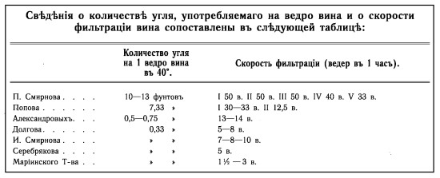
Таким образом выяснилось, что существенная разница во вкусовых особенностях столового вина во многом зависит от характера обработки углем, хотя, казалось бы, никакого влияния при использовании спирта двойной ректификации уголь оказывать не должен. В связи с этим специалисты Технического комитета обратили особое внимание на труды проф. Глазенапа, который утверждал, что
«уголь действует на спирт по преимуществу химически, превращая при помощи поглощенного им кислорода воздуха небольшую часть этилового спирта и высших алкоголей сивушного масла сначала в альдегиды или кетоны, а затем в жирные кислоты; последние частью вступают в реакции со спиртами и образуют сложные эфиры, которые сообщают фильтрату более тонкий вкус и запах и придают вину букет, смягчающий и отчасти маскирующий неприятные вкус и запах сивушного масла».
И далее:
«При ректификации, которая следует за фильтрацией, образовавшиеся вещества, придающие вину букет, не к выгоде продуктов вновь удаляются и переходят частью в первогон (Vorlouf), частью в сивушное масло. Если фильтрованный и ректификованный спирт подвергают вторичной фильтрации, как это часто делается при изготовлении лучших сортов вина, то достигаемое при этом улучшение вкуса опять-таки основано на образовании сложных эфиров, т. е. на химическом действии угля, так как здесь поглотительная способность угля уже не имеет никакого значения. Принимая во внимание, что в этом случае образование эфиров в тем большей степени ограничивается этиловым алкоголем, чем лучше спирт ректификован, а с другой стороны, что высшие алкоголи (сивушное масло) сырого спирта тоже участвуют в образовании веществ, дающих букет, надо думать, что путем вторичной фильтрации так называемых вторых сортов спирта (Secunda sprite), содержащих еще небольшие остатки сивухи, могут получаться такие вкусовые оттенки, которых не в состоянии дать чистейший спирт первого сорта. Вообще напрашивается вопрос, насколько целесообразно в тех случаях, когда предполагается вторичная фильтрация спирта, употреблять для приготовления продукта тонкого вкуса самый чистый, вполне свободный от высших алкоголей спирт». (Выделено авт. ) [263]
Изучение этих материалов вместе с результатами собственных исследований привело одного из видных специалистов Комитета профессора Кучерова к выводу, в серьезной степени ставившему под сомнение один из основных принципов монополии — давать продукт наивысшей очистки.
«…М. Г. Кучеров указывает на ту коренную разницу, которая заключается в представлениях о химической чистоте спирта и о вкусовых его достоинствах. Лучший во вкусовом отношении продукт может быть получаем из спиртов, не совершенно лишенных сивушного масла. До известной степени не без основания можно утверждать, что для получения высшего вкусового эффекта нет надобности и, быть может, даже вредно останавливаться на очень ограниченном размере середки ректификата как первичного, так и вторичного в особенности, если ректификации подвергается спирт после предварительного фильтрования через уголь. Известное содержание примесей, не удаляемых, но лишь подготовляемых к окончательному превращению их в требуемые вкусовые вещества последующей операцией холодной очистки, является даже некоторым преимуществом перед совершенной чистотой, потому что дает с точки зрения дегустации лучший продукт» [264]
Впрочем, может быть во имя «безвредности» стоит пожертвовать вкусом?
Здесь самое время поговорить о пресловутой «чистоте». Практически во всех странах приблизительно с середины девятнадцатого века винокурение разделилось на две самостоятельные отрасли: «индустриальное» — производящее дешевый высокоочищенный спирт для разнообразных промышленных целей и «традиционное» — изготавливающее непосредственно напитки с характерной, определяемой сырьем и технологиями вкусовой составляющей: всевозможные бренди, виски, коньяки, ракии, палинки, брантвейны и пр. И только Российская империя (включая царство Польское) уничтожила свое традиционное, классическое винокурение, полностью перейдя на производство спирта-ректификата и даже превратив это в предмет национальной гордости: «Зато наша водка — самая чистая!»
Может быть, химическая чистота — это действительно достоинство напитка-дистиллята? И ведь нельзя сказать, чтобы пытливое человечество об этом не задумывалось. Надо полагать, уже на заре винокурения было замечено, что продукты перегонки разного сырья существенно различаются по запаху и по вкусу, другими словами:
«…каждое сахаристое вещество после переработки дает отгон, водку или спирт, с особенным вкусом и запахом» [265]
Причем диапазон этих органолептических ощущений весьма значителен: от очень приятных до отталкивающих.
Естественно, было также установлено эмпирическим путем, что с помощью различных технологических приемов можно в какой-то степени влиять на эту вкусовую составляющую: неприятную — приглушать, приятную — подчеркивать. И еще одно очень важное обстоятельство не могло остаться незамеченным: при каждой последующей перегонке характерный вкус и запах дистиллята становился все менее отчетливым, пока отгон не приобретал некий общий специфический вкус вне зависимости от вида перегоняемого сырья. Все это могло свидетельствовать лишь о том, что в процессе перегонки помимо спирта и воды образуются некие дополнительные вещества, которых с каждой последующей перегонкой становится все меньше и меньше. Эти вещества, получившие общее название «сивушное масло», и определяют вкусовые характеристики «естественных» напитков-дистиллятов: коньяка, рома, текилы, граппы, виски, ракии и пр. (Строго говоря, помимо сивушного масла при перегонке образуются и другие вещества — эфиры и альдегиды. Однако пока для удобства мы будем говорить только о сивушном масле.)
Мы уже говорили, что в каждом регионе было свое основное сырье для перегонки. Каждому виду сырья соответствовал присущий только ему состав сивушного масла и соответственно вкус дистиллята, к которому привыкало большинство потребителей. Кроме того, винокуры с помощью различных технологических приемов, таких как многолетняя выдержка в бочках или же применявшаяся на Руси обработка органическими коагулянтами, «облагораживали» вкусовую составляющую напитка. Еще раз подчеркнем: речь идет о «естественном» вкусе, то есть образующемся в процессе перегонки и обусловленном составом сырья. Мастерство винокура сводилось, в частности, к тому, чтобы в напитке было сивушного масла ровно столько, сколько необходимо для получения привычного, «ожидаемого» вкуса. Избыток приводил к сильному привкусу «сивухи», недостаток — к ослаблению «букета». Для тех же, кому этот «естественный» вкус не подходил, создавались другие напитки, в которых вкусовая составляющая создавалась искусственно, «конструировалась» винокуром. Это был класс напитков, который в сегодняшней терминологии называется ликеро-водочными изделиями (всевозможные горькие и сладкие водки, наливки, ратафии и т. п.) и о котором мы подробно говорили в первой главе. Понятно, что для создания подобных напитков подходил спирт, как можно более нейтральный по вкусу, что вынуждало винокуров производить дополнительную его очистку от примесей. Так в России делалась, в частности, «французская водка», служившая сырьем для изготовления ликеро-водочных изделий.
До начала девятнадцатого века не было никакой ясности в том, что за вещества определяют вкусоароматическую составляющую дистиллята — она была просто данностью. Даже в двадцатые-тридцатые годы представление винокуров о примесях, образующихся в отгоне, было весьма смутным. Вот две цитаты из литературы этого периода.
«Кислыя слизистыя и масляныя части, брожением отделившияся, по причине естественной между собой связи, не только при первой перегонке спускаются в приемник, но и при второй остается их несколько, ибо они в спирт по своей летучести удобно с вином переходят» [266]
«Масло (Oel), необходимая из составных частиц в хлебе, находится в оном неиспорченным; но портится вероятно во время брожения и перегонки, и придает вину сивушный вкус и запах. Во время перегонки затора, до той степени, когда чистая влага будет переходить в приемник, масло равным образом с оною перегоняется парами. В Алкоголе масло растворяется, но в воде или слабом вине никогда, а плавает на поверхности» [267]
Ситуация с изучением примесей в алкогольных дистиллятах быстро поменялась уже к середине века. Этому активно способствовали два обстоятельства: необходимость получать для нужд промышленности все большее и большее количество нейтрального спирта и развитие науки, в частности химии. В 1871 году в России была издана многотомная «Химическая технология по Боллею», в шестом томе которой, посвященном винокурению, профессор из Брауншвейга Ф. Ю. Отто[268] дает развернутое описание сивушного масла в соответствии с тогдашним уровнем развития химии, химических технологий, а также винокуренной промышленности. Вот какое определение дается там сивушному маслу:
«Пахучие вещества, от которых зависит характеристический вкус и запах различных спиртных отгонов, суть жидкости, точка кипения которых не только выше точки кипения безводного спирта, но даже и воды и стало быть они менее летучи, нежели безводный спирт и вода. В спирту они растворяются во всех пропорциях, в воде же или совсем не растворяются, или растворяются очень мало, так что при смешении спирта с водою эти пахучие вещества выделяются… Исследования над сивушными маслами показали, что они суть смеси различных тел, часто различной летучести. В них заключаются различные спирты, летучие кислоты, сложные эфиры и наконец тела сходные с эфирными маслами, о химическом составе которых ничего нельзя сказать с достоверностью (скорее всего альдегиды. — Прим. авт.) » [269]
По влиянию на вкусовые качества дистиллятов д-р Отто различает «приятные» сивушные масла и «противные». Одни, по его мнению, повышают ценность спиртов, другие, наоборот, понижают. К первым он относит сивушное масло коньяка, рома и арака, ко вторым — картофельное и свекловичное. Справедливо отмечая, что для многих целей необходим исключительно чистый спирт, Отто в то же время утверждает, что для его изготовления нужно использовать дистилляты с неприятным вкусом и запахом — картофельный и свекловичный:
«После удаления сивушных масел, конечно, все спирты одинаковы, содержали ли они сперва приятно пахучее сивушное масло, или с неприятным запахом. Поэтому ( при решении о ректификации. — Прим. авт.) принимается во внимание цена при выборе отгона, который следует отделить от сивушного масла; для этой цели разумеется предпочитают дешевые отгоны. У нас ( в Германии. — Прим. авт.) преимущественно употребляют отгоны с неприятно пахучим маслом, т. е. картофельный спирт, свекловичный и т. п. Все спиртные отгоны, содержащие приятно пахучее сивушное масло, употребляются исключительно как напитки, а потому продаются по более дорогой цене, не только сравнительно со спиртом, заключающим неприятно пахучее сивушное масло, но даже сравнительно со спиртом, очищенным от этого масла. Поэтому никому не придет в голову отделять от сивушного масла арак, коньяк или ром, т. е. отделять от них свойственный им характерный запах и вкус и приготовлять из них отгон, не содержащий сивушного масла, ибо приготовление такого отгона может быть произведено из более дешевого спирта» [270]
Мысль совершенно ясна: сырье сырью рознь. Из одного можно получить «вкусный» дистиллят-напиток, другое же целесообразно пустить на изготовление нейтрального спирта. Остается выяснить, к какому же виду сырья автор относит зерновые культуры. Но вот на это он не дает однозначного ответа, хотя и упоминает о «масле английской виски», а также замечает, что
«сивушное масло зерновых хлебов, по Мульдеру… содержит… особенное масло с проницательным запахом, которое он называет зерновым маслом (Kornoel) и дает ему формулу C12H34O» [271]
Получив представление о примесях, образующихся в процессе дистилляции, ученые, естественно, озаботились тем, как влияют эти примеси на токсическое действие дистиллята.
В рамках подготовки к введению питейной монополии в России в 1891 г. вышла работа профессора Н. И. Тавилдарова (члена Технического комитета) «Цель и средства получения чистого спирта»[272] Работа эта примечательна по крайней мере по двум причинам: во-первых, она представляет собой полный сборник аргументов, на которые могла ссылаться монополия, декларируя идею создания «чистого питья»; во-вторых, хотя статья и создавалась по заказу монополии, такого серьезного ученого, как Николай Иванович, трудно заподозрить в манипуляции какими-либо данными. Заглядываем в этот труд. Его первая часть озаглавлена так: «Физиологическое действие сивушного масла».
И здесь мы с удивлением обнаруживаем, что в то время никакого единодушия относительно вредности примесей не существовало. Сплошные «с одной стороны, с другой стороны…». Так, по данным Тавилдарова, Пельтан (1825 г.) и Фюрст (1845 г.) были убеждены в сильной ядовитости сивушного масла, а M. Huss (1852) и Stein-Stenberg (1879) утверждали обратное, что «сивушное масло следовало признать не более ядовитым, чем обыкновенный спирт» и даже «приписывали ему врачебные свойства». Не существовало согласия и среди тех, кто высчитывал предельные токсические дозы того или иного вещества, присутствующего в алкогольных дистиллятах.
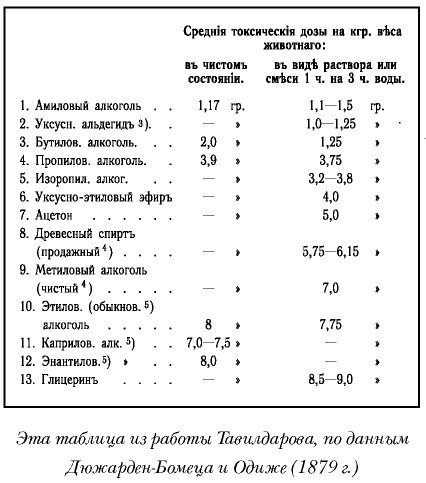
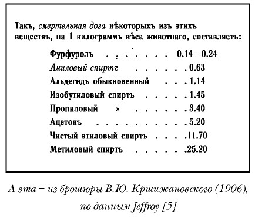
Так, например, амиловый спирт, которого в неочищенных дистиллятах содержится больше всего, по одним данным, токсичнее этилового спирта приблизительно в 5–6 раз, а по другим — в 19. Но все это — данные по действию каждого из компонентов примесей в отдельности. Когда же речь заходит о действии сивушного масла в комплексе, именно как примесей к водно-спиртовому раствору, причем в дозах, соответствующих тем, что получаются при реальной перегонке, т. е. в пределах ~1 %, усиления токсического действия раствора от присутствия этих примесей не наблюдается вовсе. Так, например, в результате экспериментов над собаками, пишет Тавилдаров,
«Страсман приходит к заключению, что относительно более сильного действия спирта, содержащего 0,3–0,5 % сивушного масла (на 100 абсол. алкоголя), сравнительно с чистым спиртом не имеется ни клинических ни экспериментальных доказательств, и далее, что при указанных условиях в действии того и другого спирта не обнаруживается никакого различия».
Один абзац вполне заслуживает того, чтобы воспроизвести его полностью:
«Вопрос о влиянии на животный организм веществ, сопровождающих сырой спирт, получил особый интерес в Германии, где, начиная с 1-го октября 1889 г., предполагалось установить обязательное очищение поступающего в потребление спирта, кроме получаемого из ржи, пшеницы и ячменя. На общем собрании Общества винокуренных заводчиков Германии в феврале 1889 г. Цунц, профессор Физиологии животных в высшей сельскохозяйственной школе в Берлине, высказал мнение, что вредные последствия употребления спирта зависят не от сопровождающих его веществ, а от неумеренного количества его в виде напитков с высоким содержанием алкоголя: в странах, где употребляются преимущественно виноградные вина и пиво, болезненные явления алкоголизма несравненно реже. Кроме того, влияние спирта оказывается особенно вредным вследствие того, что потребители крепких напитков принадлежат преимущественно к низшему недостаточному классу, условия жизни которого в гигиеническом отношении неудовлетворительны».
Эту цитату мы привели целиком исключительно потому, что мнение г-на профессора Цунца практически полностью совпадает с выводами современных токсикологов, о чем мы будем говорить отдельно.
Можно, конечно, рассматривать данные, приводимые Тавилдаровым, значительно подробнее, но окончательного вывода это не изменит: во время подготовки и введения монополии в России не было никаких доказательств сколь-нибудь заметного усиливающего влияния естественных примесей на токсичность алкогольных дистиллятов. Скорее наоборот, было достаточно строго показано, что по крайней мере для концентраций ниже 0,5 % не существует никакой разницы между «очищенным» и «неочищенным» спиртами. Далее в своей работе Тавилдаров приводит данные по содержанию сивушного масла в различных дистиллятах. Здесь тоже очень много интересного.
Первая таблица относится к ароматным (фруктовым) спиртам, составляющим основу многих европейских напитков-дистиллятов.
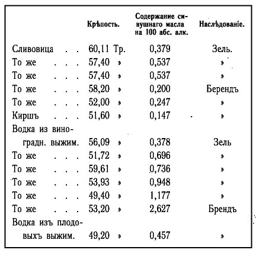
Вторая — показывает содержание сивушного масла в некоторых русских напитках.
Как видим, русское «акцизное» вино, даже самое дешевое, вопреки легенде вовсе не было «грязным», особенно в сравнении с европейскими напитками.
На основании своего обзора Тавилдаров вносит такое предложение:
«…правительство могло бы… установить предельное максимальное содержание сивушного масла в хлебном вине, поступающем в продажу, ограничиваясь на первое время невысоким требованием, напр. допуская содержание сивушного масла не больше 0,3 % относительно безводного алкоголя. Руководствуясь заключениями из опытов Страсмана, при принятом максимуме уже не будет серьезных оснований приписывать вредные последствия излишнего употребления спиртных напитков по преимуществу присутствию сивушного масла».
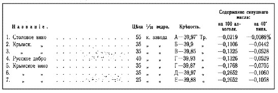
Напомним, что проф. Тавилдаров не только не был противником монополии, но, наоборот, был ее активным сторонником и сотрудником, статья была написана как обоснование необходимости непременно очищать все поступающее в продажу вино и весь производимый спирт. Но даже при этих условиях ученый не смог найти весомых аргументов в пользу полной ректификации — просто за их отсутствием. И все-таки решение использовать при монополии для производства крепкого алкоголя спирт-ректификат было принято. Остается только восхищаться тем, с какой изобретательностью придумывались все новые и новые аргументы в пользу тотальной очистки:
«Этиловый спирт кипит при +78,3 °C и может задерживаться организмом человека не более 18–20 часов, в то же время главная составная часть сивушных масел — амиловый спирт, кипящий при +130,5–131,0 °C, выделяется тем же организмом только спустя 3–5 суток. Следовательно, при ежедневном употреблении вина, содержащего сивушные масла, последние будут накапливаться (кумулироваться) в организме» [273]
Давайте вдумаемся в смысл сказанного: оказывается, поголовный переход на высокоочищенный ректификат и полное уничтожение традиционного хлебного вина обусловлены… трогательной заботой об алкоголиках!
Изменим ненадолго своему правилу опираться только на факты и попробуем просто порассуждать. Когда изучаешь материалы, предшествующие введению монополии, создается устойчивое впечатление, что любыми способами нужно было найти предлог, причем «гуманитарный», связанный исключительно с «заботой о народе», чтобы восстановить утраченный было государственный контроль над «источником барыша», дабы деньги, которые могли бы быть в казне, не перекочевывали в карманы «водочных королей».
По вопросу введения монополии просвещенная часть русского общества была поделена приблизительно поровну.[18,20] Для того чтобы склонить общественное мнение на свою сторону, правительству нужно было придумать какой-то серьезный и, главное, понятный большинству аргумент. Как известно, для таких целей лучше всего подходит какая-нибудь страшилка, какой-нибудь монстр, от которого может освободить только доброе государство. Вот на роль этого самого монстра и было выбрано пресловутое сивушное масло. Мы не рассматриваем здесь вопрос о том, насколько «чисты» были помыслы русского правительства, речь о другом — сивушное масло и примеси (в определенных пределах, разумеется) вовсе не делают дистилляты более вредными по сравнению с очищенными собратьями, что, кстати, на сегодняшний день вполне доказано современными токсикологами, о чем мы будем говорить позже.
В связи со сказанным небезынтересно посмотреть, как обстояло дело с очисткой спирта в Швейцарии, где монополия была введена раньше, чем в России (в 1877 г.), и по тем же самым причинам — обеспечить наполняемость казны и в целях борьбы с пьянством. Приведем здесь цитату из отчета профессора Вериго, командированного специально для того, чтобы изучить опыт швейцарской монополии.
«Сырой, поставляемый для алкогольного управления, спирт должен удовлетворять определенным требованиям, касающимся крепости и степени чистоты. Для заводов с аппаратами периодического действия крепость спирта при 15 °C должна быть не менее 80 % по объему, при аппаратах постоянного действия требование относительно крепости поднято до 92 % по объему. Сырые спирты не должны содержать больше 0,4 % посторонних веществ (веществ кроме алкоголя и воды), они не должны заключать металлических примесей и обладать неприятным запахом или вкусом.
Сырой спирт направляется в склад и очищается ректификациею на устроенном там спирто-очистительном заводе. Такой очистке подвергается не все количество поставляемого сырого спирта; некоторая часть картофельного сырого спирта, назначаемая для приготовления вина, вовсе не ректифицируется и поступает в обращение, если количество посторонних веществ не превышает некоторого предела, или же содержание посторонних примесей в сыром спирте низводится добавлением очищенного спирта до того предела, при котором спирт признается удовлетворяющим требованию закона о достаточной очистке спирта, идущего на приготовление напитков. (Выделено авт. )
Такое отступление от обыкновенных приемов очистки сырого спирта обусловливается образовавшеюся у некоторой значительной части потребителей вкусовой привычкой к особенному сивушному маслу картофельного спирта, которое считается необходимою составляющей вина, его букетом. Союзное Правительство не находило основания противодействовать этому направлению вкуса, полагая, что некоторое небольшое содержание картофельного сивушнаго масла не могло быть более вредным для здоровья, чем содержание веществ, составляющих букеты других спиртовых напитков. Имелось в виду также, что при требовании совершенного очищения картофельного спирта будут прибавлять к очищенному спирту произвольно и бесконтрольно картофельное сивушное масло, которое станет обращаться в торговле в виде картофельной винной эссенции» [275]
То есть в Швейцарии при введении монополии не стали с водой выбрасывать и ребенка, а предпочли бережно сохранить свой национальный «брантвейн».
Однако пора вернуться к проблемам нашей винной монополии, а точнее Технического комитета. Изучая столовые вина частных производителей, специалисты комитета помимо сивушного масла обратили внимание на содержание так называемого сухого остатка.
Содержание сухого остатка в столовых винах частных фирм часто достигает весьма значительной величины, до 900 миллигр. на литр и падает до 50 миллигр. Следовательно, сухие остатки весьма часто являются вовсе не безразличными, но веществами, могущими иметь существенное влияние на качество вина.
…Щелочной характер соляной массы в вине вызывает разложение эфиров и обусловливает постепенное исчезновение и окончательное их обмыливание; в таких винах эфиров почти вовсе не содержится: они могут существовать в некоторых количествах лишь при соляной массе среднего характера. Эти взаимно связанные факторы обусловливают разнообразие характера и вкусовых качеств столовых вин частных фирм. Московские фирмы пользуются для приготовления вина очень чистою мытищенскою водою или же артезианскою; в первом случае соляная масса вина получает щелочной характер от присутствия поташа; во втором случае в ней заключаются лишь ничтожные количества поташа или же она среднего характера. Вместе с тем самое количество соляной массы зависит от количества угля на ведро фильтрующегося вина и от того, будет ли этот уголь свежий или оживленный:
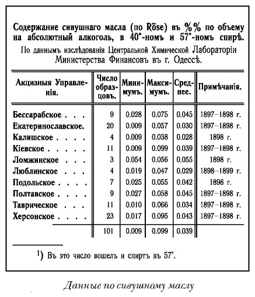
В противоположность к винам Московских фирм в Нижнем Новгороде и Казани развилось приготовление иного типа вина, получившего большое распространение и известность по своим достоинствам — это вина Долгова и Александрова. Отличительный признак этих вин заключается в малом и даже весьма незначительном содержании растворимых в вине веществ. Вино Долгова обозначенное «Императорское» содержит 101 миллигр., в вине Александрова № 000 заключается 50 миллигр. в литре вина растворимых веществ щелочного характера. Количество углекислоты составляет в вине Александрова 21 миллигр. на литр, в вине Долгова углекислоты не оказалось; эфиров вовсе не имеется, а органических кислот в обоих винах ничтожное количество. Нижегородская фирма Долгова и Казанская Александрова применяют дистиллированную воду, и соляная масса вина происходит лишь из зольных частиц угля [276]
То есть выяснилось, что у «частников» существуют два типа столового вина: «московский» щелочной и «волжский» нейтральный, обусловленные тем, что московские производители применяли сырую воду и иногда (П. Смирнов) очень большое количество угля для фильтрации, волжские же фирмы использовали только дистиллированную воду. У каждого из типов вина существовал свой круг почитателей, однако принцип монополии — единообразие, поэтому предстояло решить, каким же должно быть казенное столовое вино. Естественно, решение было принято в пользу более простого и «индустриального» «волжского» варианта, но заслуживает внимания то, каким способом обходилась монополия с потребителем:
«Казенное управление, имея в виду сложившуюся привычку у потребителей некоторых районов к сильно щелочному вину, вынуждено изготовлять такое вино и выпускать его в продажу, но… если частные фирмы могли приучить потребителей к щелочному вину, то почему нельзя казенному управлению приучить тех же потребителей к более нейтральному вину путем постепенного понижения в столовом вине щелочности до величины в 100 и даже 50 миллигр. поташа в 1 литре, как в винах Долгова и Александрова?!» [277]
Конечно, при отсутствии конкуренции приучить можно ко всему — вопрос времени… Кстати, о конкуренции. Может сложиться впечатление, что монопольное вино действительно конкурировало с вином частных производителей. В реальности ничего подобного не было. Вспомним, что монополия была монополией на продажу спиртных напитков. И поэтому на монопольных территориях продавалось главным образом то, что производила сама монополия. Исключения делались только для небольшого числа торговых точек, главным образом дорогих ресторанов, которые получали специальный патент на торговлю спиртными напитками.
Так или иначе, но технология изготовления «монопольных» вин — простого и столового — была разработана. В схематическом виде она выглядела так:
— производится ректификация спирт-сырца (однократная для приготовления простого вина и двукратная — для столового),
— спирт разводится («рассиропливается») до нужной пропорции водой (сырой или исправленной — для простого вина и дистиллированной — для столового),
— производится однократная непрерывная фильтрация сортировки через уголь в количестве, не превышающем полфунта на ведро при скорости фильтрации от 5 до 10 ведер для каждой батареи угольных фильтров. Уголь используется березовый или липовый,
— готовый продукт разливается в посуду из устойчивого стекла [278]
Что же это был за напиток? Разумеется, попробовать мы его не можем. Но можем попытаться представить себе его вкус (если вкус вообще можно представить): описание технологии производства и анализы тех лет дают вполне достоверную и объективную информацию, тем более что технология с тех пор принципиально не изменилась. Собственно говоря, современную водку производят практически по той же схеме: ректификованный спирт рассиропливают до 40 % и пропускают через уголь (правда, активированный). В общем-то фактически это и было то, что сегодня называется водкой. Приведенные ниже анализы химического состава «монопольки» вполне красноречиво об этом свидетельствуют. Да, «простое монопольное вино» содержало чуть больше примесей, чем допускает современный ГОСТ, но все-таки это была уже водка. Столовое же вино вполне сопоставимо с водками, как выпускаемыми в советский период, так и с современными. Разве что разрешенных нынешним ГОСТом добавок не было. Так ведь они мало на что влияют.
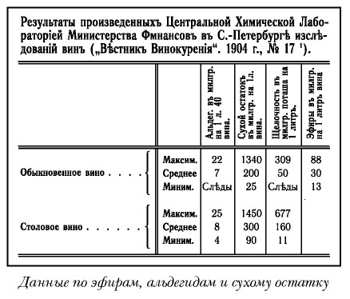
Мы уже говорили о том, что современная водка принципиально отличается от традиционного «хлебного вина», которое по сути своей — очень хороший зерновой самогон, зачастую со специально «округленным» (с помощью различных коагулянтов животного происхождения и того же угля) вкусом. А самогон даже по запаху, не говоря уже про вкус, — совсем иной напиток, нежели водка. Чтобы не быть голословными, давайте составим табличку, в которую сведем основные характеристики хлебного вина и водки. Из нее ясно следует, что при всем своем «родстве» хлебное вино и водка — напитки разные, отличающиеся практически по всем основным характеристикам.
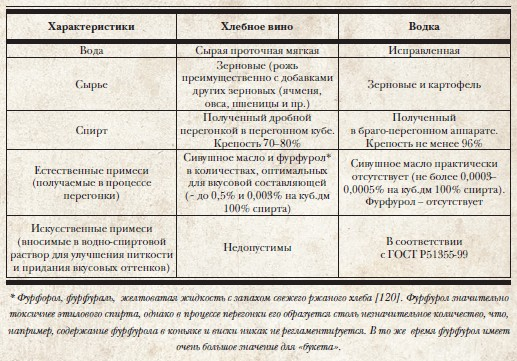
Здесь нельзя не вернуться ненадолго к вопросу о сырьевой составляющей. Противники монополии (а их было немало, и среди них люди весьма компетентные и влиятельные) в качестве одного из аргументов указывали на широкое использование при производстве «питей» картофельного спирта. Так, например, проф. И. Сикорский в статье «Алкоголизм и питейное дело» писал:
«Картофельная водка несмотря на всеобщее распространение принадлежит к числу дурных водок; распространение ее зависит исключительно от дешевизны ее» [279]
Кстати, подобного мнения, как известно, придерживался и классик марксизма Ф. Энгельс, которого так любят цитировать сторонники «нашей, чисто зерновой»[280] Однако у монополии на это был убийственный контраргумент:
«В настоящее время уже прочно установлено, что сырые картофельные спирты в общем содержат сивушных масел меньше, чем хлебные, и очистка их ректификацией производится легко. Поэтому вино, изготовленное из сырого картофельного спирта, а тем более из ректификованного, как это принято у нас в казенных винных складах, безусловно должно содержать сивушных масел не более, чем хлебное» [281]
Беда в том, что в этой полемике, где правота все-таки скорее на стороне монополии, не учитывается принципиально важная составляющая: органолептика. Да, говорить о том, что картофельные спирты, тем более высокоочищенные, вреднее зерновых, нет никаких оснований, а по вкусу все высокоочищенные спирты одинаковы. (Иное дело — дистилляты: здесь во вкусовом плане зерновые спирты имеют несомненное преимущество.) Так что, принимая решение об использовании высокоочищенных ректификованных спиртов, монополия получала лишний аргумент в полемике с противниками «казенной продажи питей». И кроме того лишала возможности сравнивать напитки из разного сырья — так сказать, «нет предмета — нет проблемы».
Итак, монополия производила напиток, который был фактически аналогом современной водки. Разумеется, «изобрела» его не она, ведь в основу была положена технология приготовления столового вина акцизного периода. Однако монополия постепенно по мере своего распространения почти на всю территорию Российской империи сделала этот напиток единственным массовым крепким алкогольным напитком в стране, фактически выступив в роли «убийцы» традиционного хлебного вина (которое, правда, стало к тому времени не столько «хлебным», сколько «картофельным» — и за это тоже спасибо государству).
Давайте для простоты воспользуемся современной терминологией и посмотрим, какие виды зерновых (картофельных) дистиллятов производили в России в разные периоды и в какой пропорции. Что получается?
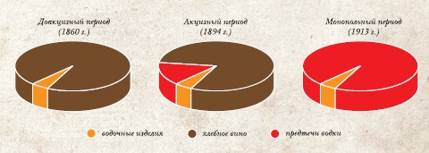
В доакцизный период: хлебное вино (полугар, пенник, трехпробное, двойной спирт) ~ 95 %, сладкие и ароматические водки ~ 5 %. (Заметим, что количество водочных изделий, производимых в доакцизный период, учету практически не поддается, так что цифра, приведенная здесь, носит сугубо оценочный характер.)
В акцизный период: хлебное вино (очищенное вино) ~ 80 %, напитки — предтечи водки (столовое вино, очищенное вино из ректификованного спирта) ~ 15 %, водочные изделия ~ 5 %.
В монопольный период (1913 г.): напитки — предтечи водки (простое вино, столовое вино) ~ 95 %, водочные изделия ~ 5 %.
На диаграмме видно, что стараниями монополии произошла полная замена национального русского напитка: за неполные тридцать лет водка (а точнее «казенная продажа питей») окончательно уничтожила традиционное хлебное вино. Мы вовсе не хотим сказать, что водка — плохой напиток, совсем наоборот. Водка — напиток в своем роде выдающийся, не зря же он в последнее время стал одним из ведущих в мировой алкогольной индустрии. Речь идет о другом: при естественном развитии событий водка и хлебное вино находились бы в конкурентной борьбе, как это было в акцизный период, и каждый из напитков наверняка имел бы свой круг почитателей, у которых, в свою очередь, была бы свобода выбора. Логично даже предположить, что хлебное вино и водка по популярности поменялись бы местами, так же как поменялись бы они местами по стоимости: водка с развитием техники превратилась в относительно дешевый продукт, хлебное вино, доживи оно до наших времен, стало бы продуктом очень дорогим и хотя бы уже потому — элитным. (Хлебное вино — продукт ручного труда, состоящий из абсолютно натуральных компонентов, и следовательно сегодня по определению дорогой.) Так что монополия осуществила два знаковых, но разнонаправленных деяния: утвердила водку как национальный русский стандарт, тем самым серьезно поспособствовав рождению впоследствии мирового напитка «vodka», и вместе с тем уничтожила собственное традиционное винокурение вкупе с традиционным историческим русским «хлебным вином».
И, пожалуй, следует еще поговорить о «дне рождения водки». Увы, как это часто бывает в истории, «дня рождения» как такового не было. Был постепенный диалектический процесс перехода количества в качество. Надо полагать, что впервые жидкость, соответствующая по параметрам современной водке, была получена еще аптекарями где-нибудь в XVII веке. Во всяком случае практически это вполне реально. Но, во-первых, тогда она не была напитком, а во-вторых, ни о каком сколь-нибудь массовом производстве не могло быть и речи. Позднее, в акцизный период, появилось вино высшей очистки — столовое. Но здесь надо сказать, что «высшая очистка» в начале и в конце акцизного периода существенно отличалась. Как мы уже знаем, «высшая очистка» суть очистка горячим способом, ректификация. И для того, чтобы понять, в какой же период времени степень очистки столового вина стала соответствовать уровню современной водки, необходимо внимательно изучить возможности ректификационных аппаратов: когда же появились те, что давали действительно высокоочищенный спирт на уровне сегодняшних ректификатов. (В какой-то степени мы попытаемся ответить на этот вопрос в следующей главе.)
Пока же мы можем констатировать следующее: к середине восьмидесятых годов напитки, соответствующие современной водке, уже были (столовые вина частных фирм), а к 1913 г. они (монопольные простое и столовое вино) превратились, хотя и насильственным путем, в национальный русский напиток.
Словом, в результате деятельности монополии в России произошла своего рода «водочная революция», результаты которой «утвердили» впоследствии большевики. Однако рассказ об этом (и о предлагаемом дне рождения водки) — впереди.